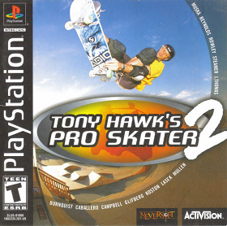

Simulation · 2000
Tony Hawk's Pro Skater 2
Manuals, the two-minute run, and a soundtrack nobody has escaped.

Cover: Wikipedia: Tony Hawk's Pro Skater 2
Facts
- Released
- 2000-09-20
- Genre
- Sports
- Category
- Simulation
- Platforms
- Mobile, Nintendo, PC, PlayStation, Sega, Xbox
- Developers
- Neversoft
- Publishers
- Activision